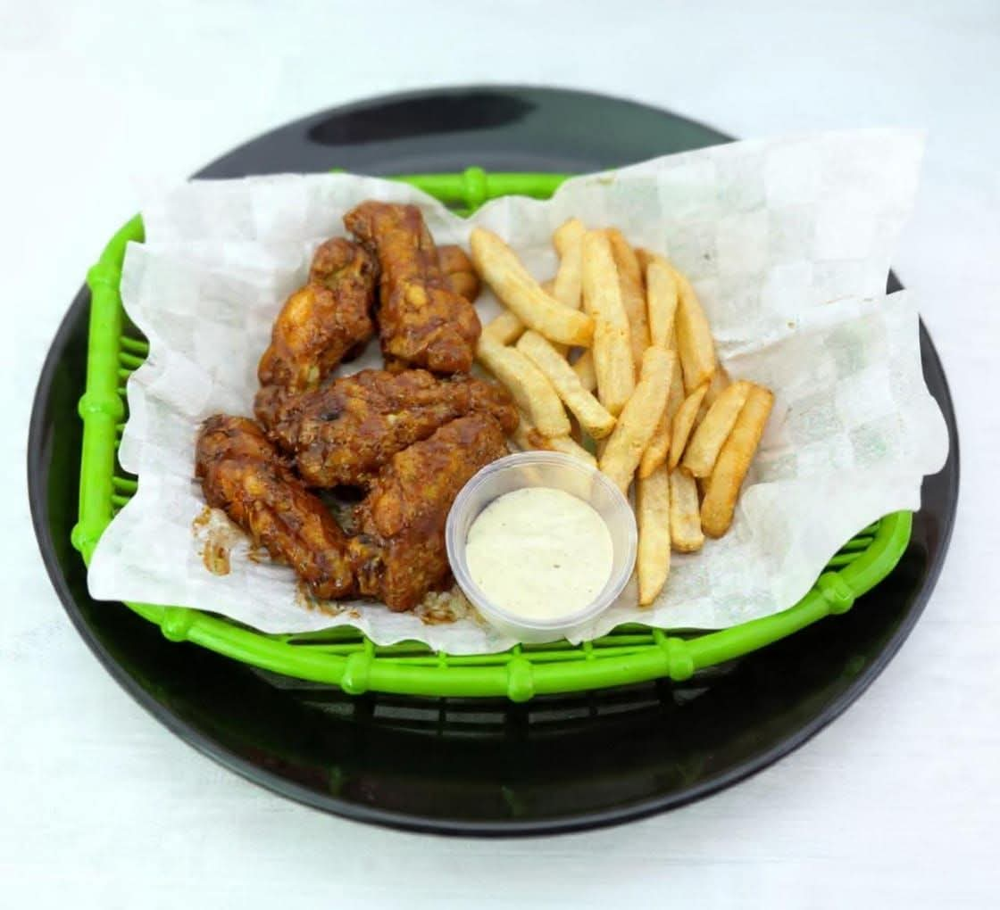
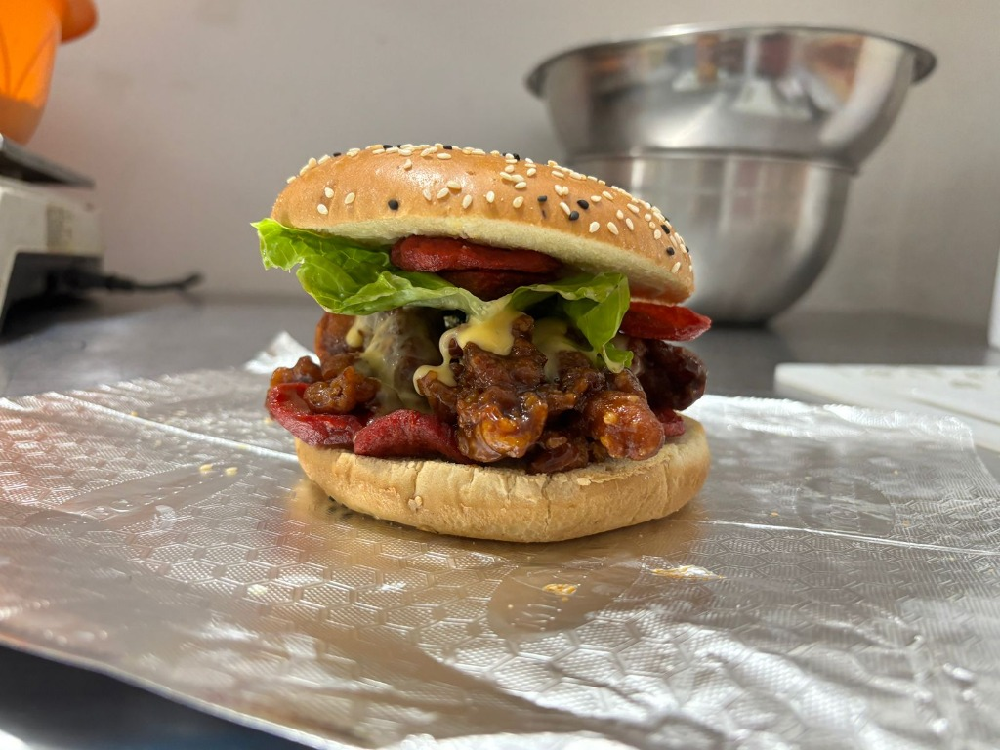

Nuestra Carta
Selecciona una categoría para ver nuestras especialidades.
Orden Mix (Alitas/Papas)
$125La combinación perfecta entre la suavidad de las alitas y lo crujiente de nuestras papas premium.
Porción Individual
🌶️ Salsas Disponibles:
BBQ
Búfalo
Ranch
Mango Habanero
Habanero
Chipotle
Cátsup
1/2 KG de Alitas
$150El rey de las reuniones y fiestas en el Istmo. Ideales para compartir o para un apetito voraz. Bañadas en la salsa de tu elección.
Favorito
🌶️ Salsas Disponibles:
BBQ
Búfalo
Ranch
Mango Habanero
Habanero
Chipotle
Cátsup
1 KG de Alitas
$295El rey de las fiestas y reuniones. Una montaña de alitas con sabor inigualable.
Combo Grupal
🌶️ Salsas Disponibles:
BBQ
Búfalo
Ranch
Mango Habanero
Habanero
Chipotle
Cátsup

Cono Sencillo (1 proteína)
$125Nuestro icónico cono relleno de boneless. El formato perfecto para comer caminando por las calles de Ixtepec o en el parque.
Cono Doble (2 proteínas)
$150Dos proteínas a elegir. Perfecto para esos momentos de indecisión deliciosa en Ciudad Ixtepec.
Cono Regular Boneless
$145Clásico irresistible en el Istmo. Solo boneless premium bañados en tu salsa secreta favorita.

Arrachera con Papas
$150Carne premium jugosa a la parrilla. El antojo nocturno favorito del Istmo de Tehuantepec.
Premium
Boneless Burger con Papas
$150Nuestra creación original: boneless crujientes dentro de un pan artesanal. Única en todo el Istmo de Tehuantepec.
Boneless Burger Sencilla
$125Hamburguesa con boneless, preparada con ingredientes frescos para satisfacer tu antojo en Ixtepec.
Mr. Chicken Special
$125Pollo crocante con un aderezo especial. La preferida por los jóvenes de Ixtepec.

Orden de Papas Tradicional
$75Papas a la francesa de corte premium, sazonadas con nuestra mezcla secreta para acompañar tus tardes en el Istmo.
Frappé Mazapán
$65Sabor intenso y textura ultra refrescante. Perfecto para el calor del Istmo.
Frappé Capuchino
$65El toque de café perfecto para equilibrar el fuego de tus alitas o para una tarde calurosa en Ixtepec.
Frappé Moka
$65Sabor moka, la opción favorita en el Istmo para complementar tu hamburguesa o boneless.
Frappé Oreo
$65Galleta Oreo triturada en un frappe helado. El favorito de los estudiantes en Ciudad Ixtepec.